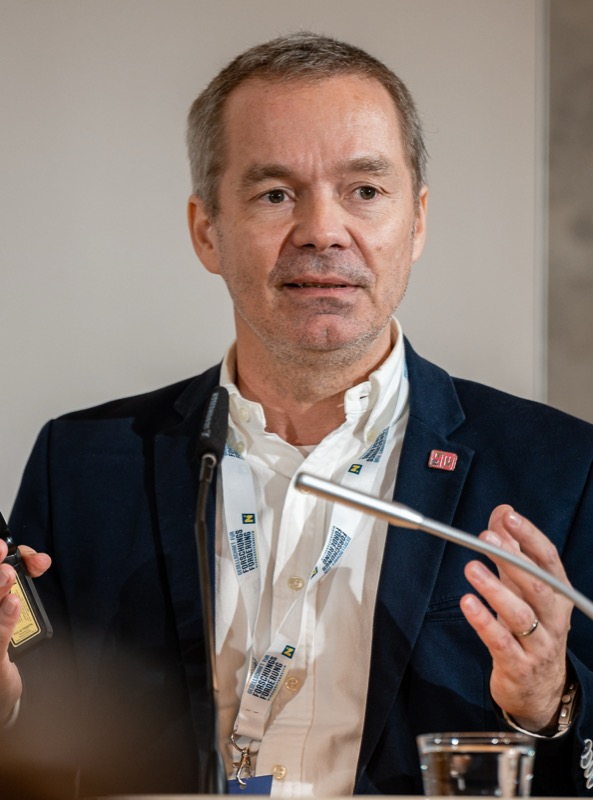

Rostam J. Neuwirth
University of Macau
Talk title
Pluralism and the Paradox of AI Alignment: Rethinking Human Intelligence in the Age of AI
Abstract
AI alignment seeks to ensure that intelligent systems act in accordance with human values and societal goals. Yet alignment raises a deeper question: what exactly is the human intelligence against which AI is measured? As AI systems become increasingly capable of learning, adapting, and making autonomous decisions, intelligence itself emerges as a contested and plural concept. This keynote explores the bi-directional nature of human-AI alignment: while AI must adapt to human values, humans must also develop the literacy and cognitive skills needed to work effectively with AI. This creates a paradox: how do we cultivate forms of intelligence that are only now emerging?
Bio
Rostam J. Neuwirth (諾思坦) is Distinguished Professor of Law and Head of the Department of Global Legal Studies at the University of Macau. Previously, he taught at the West Bengal University of Juridical Sciences (NUJS) in Kolkata and the Hidayatullah National Law University (HNLU) in Raipur (India) and worked as a legal adviser in the Department of European Law of the International Law Bureau of the Austrian Federal Ministry for Foreign Affairs. He received his PhD degree from the European University Institute (EUI) in Florence (Italy) and also holds a master’s degree in law (LLM) from the Faculty of Law of McGill University in Montreal (Canada). As an undergraduate he studied at the University of Graz (Austria) and the Université d’Auvergne (France). He is the author of The EU Artificial Intelligence Act: Regulating Subliminal AI Systems (Routledge 2023), which was also translated into Chinese, as well as Law in the Time of Oxymora: A Synaesthesia of Language, Logic and Law (Routledge 2018). He has also published extensively in international journals on contemporary global legal issues, exploring the intrinsic linkages between law, on the one hand, and language, cognition, art, culture, society, and technology, on the other.